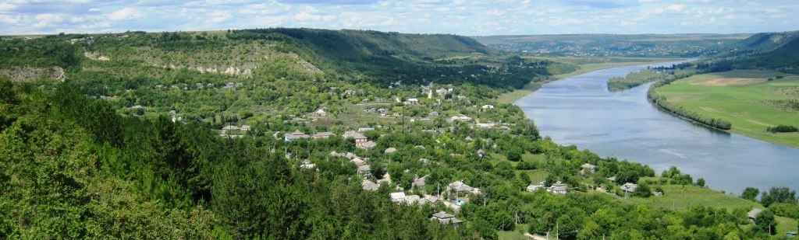
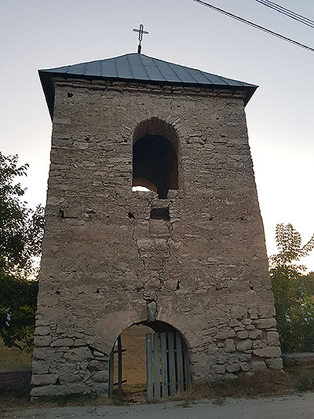
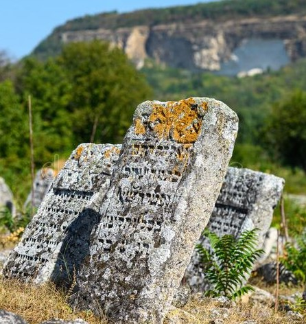

|  | ||
VADUL-RAȘCOV |
||
Clopotnița din Vadul-Rașcov, r. Șoldănești– Clopotnița a fost construită în secolul XVII. Cu o înălțime de șapte metri și cu pereții din piatră, construcția are două nivele. Ea este situată lângă un cimitir vechi, în care s-au păstrat un cavou și câteva cruci. Lângă ea se afla inițial și o biserică din lemn, care a fost, însă, distrusă în timpul celui de-al doilea război mondial. Din ea a rămas doar altarul în care, în zile de sărbătoare, localnicii mai aprind candela. – Clopotnița are multe fisuri. În pereți sunt gări în care s-au aflat, cel mai probabil, bârne din lemn care au asigurat stabilitatea construcției. sursa: eucbm.eu4moldova.md |
 | |
| |
||
|  |
Cimitirul evreiesc de la Vadul RaşcovVadul Rașcov este așezat pe cursul de sus al bătrânului Nistru. Localitatea de azi din cuprinsul Șoldăneștiului a fost cândva un târg renumit în toată regiunea. După anexarea Basarabiei de Rusia țaristă în 1812 în această regiune migrează evreii din Rusia și Polonia. Astfel, în Vadul Rașcov este înființat şi un cimitir evreiesc, care la început era unul mic. Spre sfârșitul secolului al XIX-lea, în Vadul lui Rașcov erau doar vreo 200 de familii de băștinași și peste 500 de familii de evrei. Cu timpul mormintele deveneau din ce în ce mai numeroase, așa că cimitirul s-a extins tot mai mult pe moșia satului. În ajunul celei de-a doua conflagrații mondiale, în sat exista o singură biserică creștin-ortodoxă și 7 sinagogi. În anii războiului târgul evreilor din Vadul Rașcov a ars, a fost mistuită de flăcări și biserica din apropiere, şi doar clopotnița a rămas neatinsă şi veghează şi în prezent liniștea satului. Nu se știe cu exactitate câte morminte sunt aici, deşi acum câțiva ani localnicii au încercat să afle numărul lor şi se pare că ar trece de 6 mii de pietre funerare. Majoritatea inscripțiilor de pe morminte, cu mici excepții, sunt scrise în limba ebraică, astfel nu poţi să descifrezi textele fără a cunoaşte această limbă sau fără a fi însoţit de un traducător. Singurele semne cunoscute sunt anii naşterii şi ai decesului, gravați pe pietrele funerare. Se zice că cimitirul evreiesc de la Vadul lui Rașcov este cel mai mare din Republica Moldova și unul dintre cele mai mari cimitire evreiești din Europa de Sud Est. Cu toate acestea, astăzi în localitate nu mai există nici o familie de evrei. sursa: observatorul.md |
|
|
|
||
|
COPYRIGHT © 2021 Vadul-Rascov |
||